华中农业大学信息与计算科学本科，GPA 3.85/4、专业前 5%。推免至武汉大学应用统计。用数学理解世界，用工程解决问题。
好的模型，始于对问题的诚实理解——这是我对待科研、竞赛与工程的一致态度。
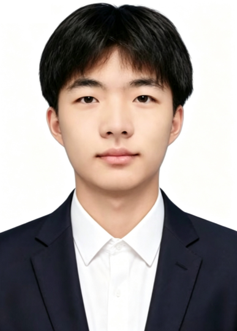
本科就读于华中农业大学信息与计算科学专业，GPA 3.85/4、算数平均分 91.41，位列专业前 5%；数学功底扎实，计算机编程能力突出。
我享受从抽象建模到工程落地的完整闭环：数学建模竞赛中的多目标优化与不确定性分析、课题组里的模型训练与机理探究、全栈项目中的接口设计与部署交付——严谨与好奇，可以同时在场。
本科 · 华中农业大学 · 信息与计算科学（2023.9 — 2027.7）
研究生 · 武汉大学 · 应用统计（2027.9 — 2029.7）
中共预备党员
CET-6 456 · 普通话二甲
湖北十堰 · 武汉求学
以数学建模与算法优化为核心，数据分析、运筹优化、机器学习与可视化协同构建完整闭环。
11 年游戏玩家，深研机制与数值设计，把"求解更优解"带进实际游戏中。
用数学理解世界，从 MCM 到科研机理探究，享受抽象到落地的闭环。
用 Codex / WorkBuddy / Trae 优化网页、复现论文、做小游戏，乐在其中。
保持规律运动，用身体和大脑一起求解。
技术、社科、科幻均有涉猎，好奇心驱动持续输入。
放松与专注的伴奏，写代码时的白噪音 · 听歌时长 2400+。
数学与计算机能力突出，连续获得国家级奖学金与校级综合荣誉。
GPA · 位列专业前 5%
算数平均分 · 专业排名 4/101
编程类课程均分
金融数学 · 数据挖掘 · 高性能计算
复变函数 · 离散数学 · 几何学
概率论与数理统计
信息安全数学基础 · 实变函数
国家级奖学金
校级综合荣誉
班级工作荣誉
团内荣誉称号
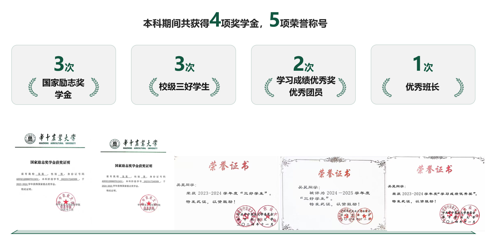
从美赛特等奖提名到连续两届全国大学生数学竞赛获奖，体现数学基础与数模建模能力。
MCM 2026 · 特等奖提名
数学竞赛 B 类
数学竞赛 B 类
华中杯
特等奖提名（Finalist）
运用 Python、MATLAB 搭建多目标优化与随机仿真模型，采用 NSGA-II / NSGA-III、蒙特卡洛模拟、熵权法等算法，完成地月物流系统成本—时间—环境综合优化及不确定性分析。
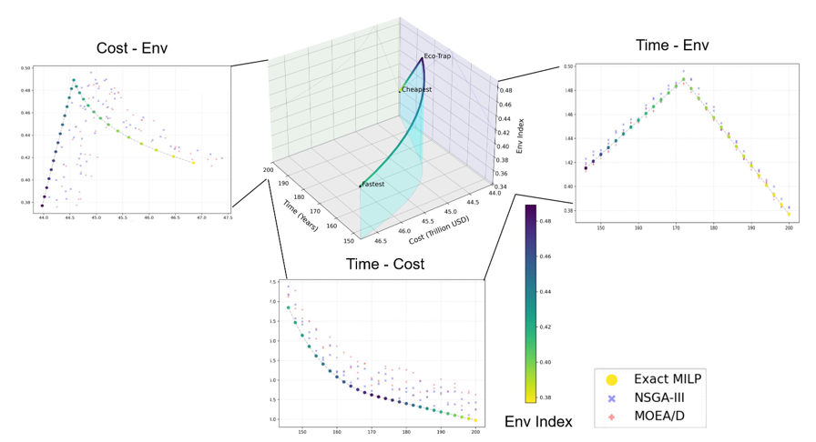
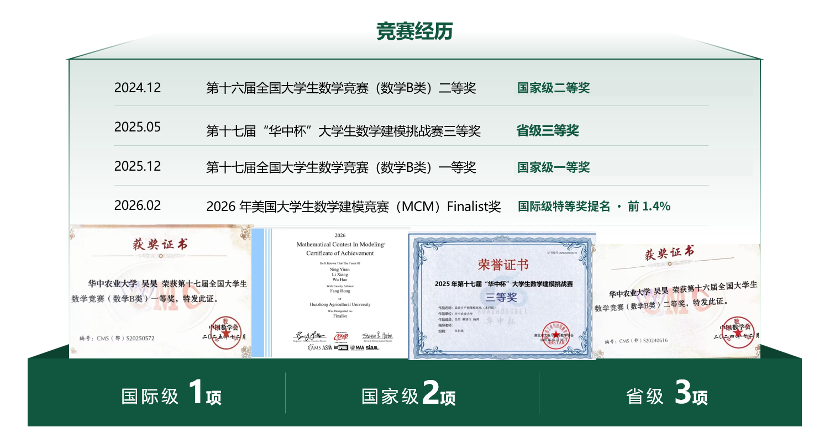
连续两届获奖 · 数学 B 类
2024 届：数学 B 类 · 二等奖；2025 届：数学 B 类 · 一等奖。同年级专业第三。
华中地区大学生数学建模邀请赛。
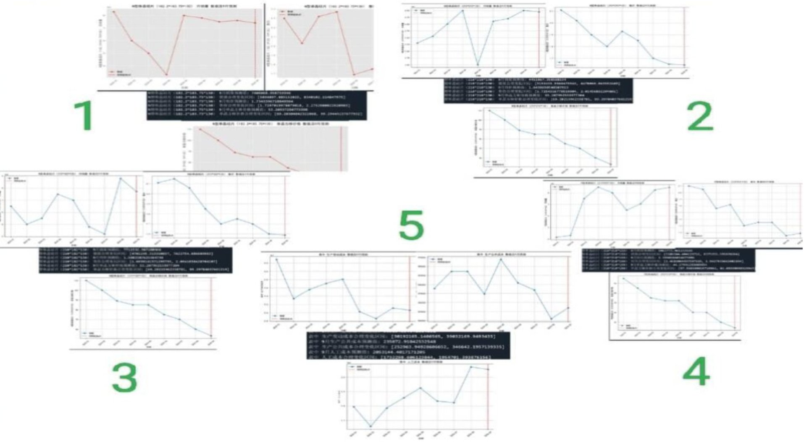
四段科研经历覆盖计算机视觉前沿方向、机器学习理论机理、目标检测工程实践与方法复现优化。
独立完成数据预处理全流程；提出 ConvNeXt 主干与 Cascade-Mask-R-CNN 结合的改进方案 CPCA-Pro，引入 CPCA 注意力模块，增强对小目标、遮挡目标的特征聚焦能力。
mAP（全部对比方法最优）
mAP@0.5（位列第一）
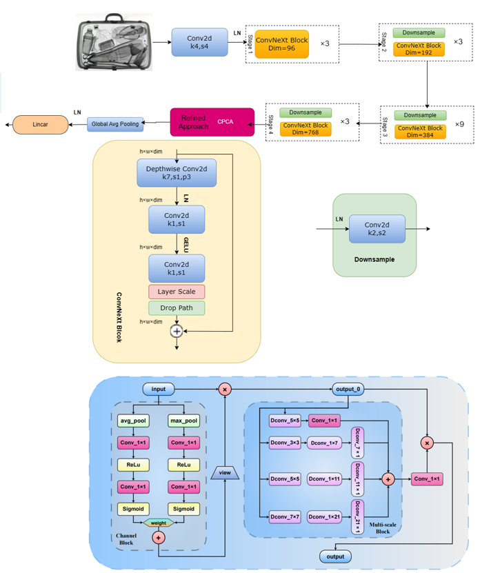
围绕训练样本量及平移、旋转、缩放等几何变换对分类结果的影响展开系统性分析；基于 ResNet18 完成模型训练与结果分析，综合运用 PCA、协方差分析、特征空间可视化量化不同变换的影响。
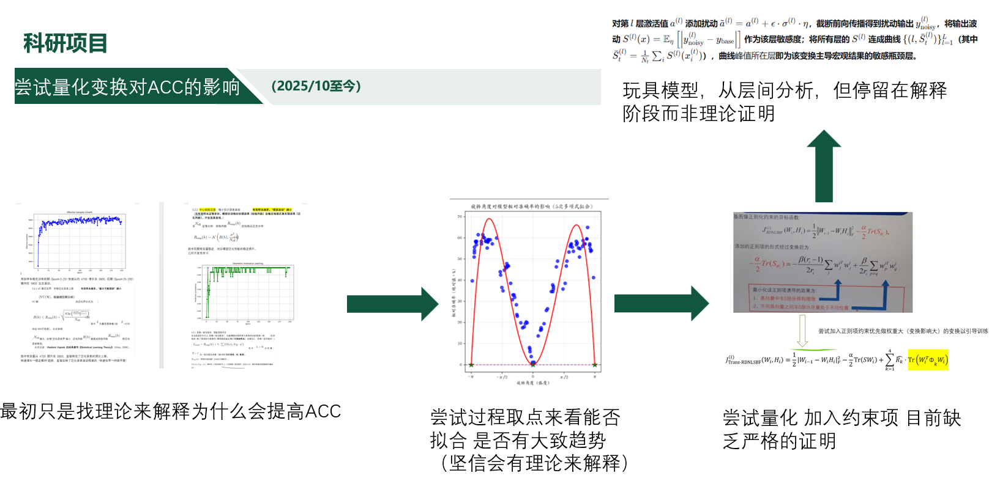
参与组合图像检索（CIR）方向科研训练，探究数据增强中几何变换提升模型准确率的数学机理，同步研习机器学习基础理论与科研论文写作范式。
围绕单细胞 Hi-C 数据高稀疏性、测序深度差异及批次效应问题，完成四个公开数据集的预处理与多方法评估；复现并优化 BandNorm，引入截尾均值估计与低可靠条带温和收缩，构建 RS-BandNorm，并参与 scVI-3D 参数调优及 Beta-VAE、Deep VAE 等模型变体实验。
结合 Harmony、CellScale、BandScale、scHC-Topics 等方法的系统对比与 pseudo-bulk Hi-C 结构验证，评价不同方法的聚类与结构保持能力。
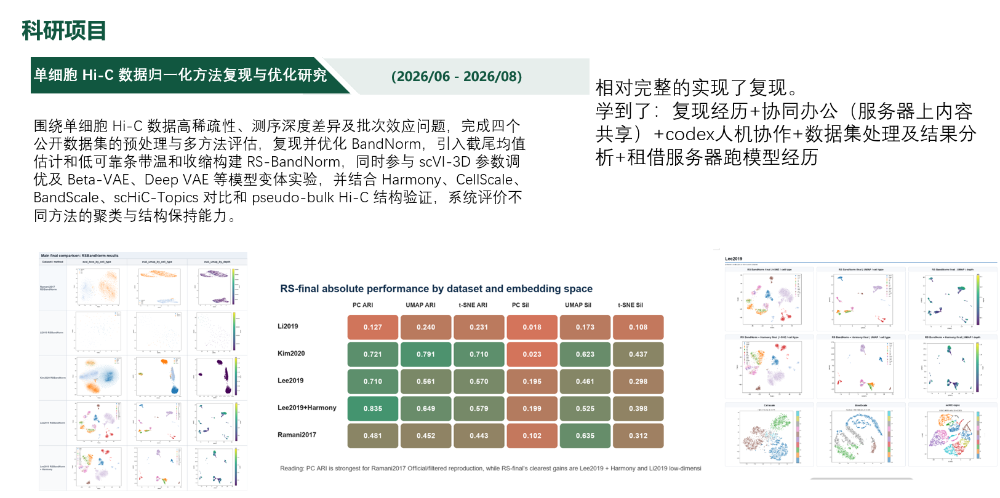
全栈培训期间参与真实系统开发，并用参数化思路打磨游戏 Demo——工程能力在两个方向同时生长。
金山办公全栈专项培训期间参与开发：负责前后端联调、接口设计与核心功能实现，独立处理跨域配置、环境变量管理与打包部署。
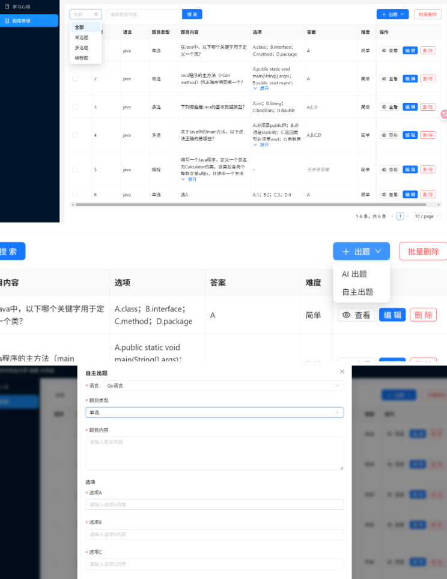
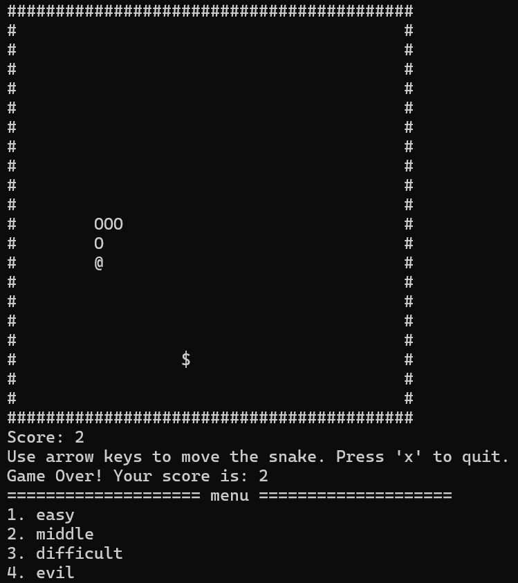
自主开发 · C++ 实现，覆盖手动操作与 AI 寻路两个版本，全程贯彻参数化配置思路：手动版设计三档难度体系，将移动速度、成长系数、道具倍率等核心参数与核心逻辑解耦；AI 版基于改进寻路算法，将避让权重、追击优先级、转向灵敏度等行为参数可配置化。
沸点工作室培训项目 · Python 实现，含完整图案表现的泡泡龙休闲消除游戏原型；在培训项目框架下锻炼面向对象设计与游戏循环工程能力。
11 年玩家视角 × 数理建模方法：拆解体验、量化难度，最后再反驳一次自己的结论。
以两款同品类解谜游戏为样本，回答四个问题：谁在玩 Sort 这类游戏、“手感更好”究竟由什么构成、问号瓶改变了哪些决策、以及能否用一套可验证的公式量化关卡难度。
用年龄、性别、职业做分类几乎没有解释力。真正决定留存的是玩家从一局里拿到的核心回报——同一款游戏可以同时服务六种完全不同的回报结构。先界定一条原则：成就感是所有玩家共有的伴随体验，只有把它当作唯一驱力、愿意为结果牺牲过程的人，才单独归为一类。
核心回报是“混乱→有序”的收敛感，享受颜色逐层归位、局面从杂多走向单一，对应认知闭合的心理需求。
无计时、短会话，匹配“健脑不费脑”的轻度心流：在不制造焦虑的前提下调用空间规划与顺序推理。
被问号瓶、隐藏层吸引，享受信息不完整时边操作边修正计划，过程类似“拆绳结”——这是机制拓展出的核心用户群。
防御端靠 Undo、Shuffle 消除卡关挫败；进取端靠道具与合成提供长期进度积累，试错代价低、收获感稳定。
以通关结果确认为核心诉求，过程体验优先级低，可以为快速通关随意使用道具。
用低负荷机械操作填充多余注意力，常出现在追剧、摸鱼场景，不刻意追求通关，属于无意识沉浸。
Sort 品类的底层体验共性是：规则透明的秩序收敛、可控无压迫的认知挑战、碎片化即时反馈。纯排序玩法覆盖第 1、2、5、6 类；加入信息隐藏、逐步揭示的变体额外吸纳第 3 类；再叠加容错道具与收集合成，才覆盖第 4 类——在不破坏品类松弛底色的前提下拓宽受众边界。
玩家说的“手感好”其实是两件事的混合：单次操作瞬间的反馈质感，与整局流程的顺畅感。它们由三层完全不同的设计支撑，重要性并不对等。
表现层是决定性的，它定义手感的上限与下限。容错与广告节奏属于体验保障因素，只能放大表现层的优势：若液体动画僵硬、色层模糊难辨，即便有无限次撤销、全程无广告，玩家也不会觉得“倒水舒服”；反之表现够好，狭义手感依然成立，只是整体体验打折。
问号瓶首次倾倒才揭示内部颜色，隐藏层随操作推进逐步露出。它的目的不是增加步数，而是制造信息延迟：玩家无法开局规划完整解法，只能先规划到“信息揭示节点”，再依据揭示结果重排后续路径。
开局所有颜色可见。策略核心是搜索效率（最少步数 / 最优顺序），也是 Magic Sort 的“新手村”主体。
存在问号瓶或隐藏层，信息按固定规则在操作中揭示。策略核心是触发顺序：先打开哪个信息包，打开后如何重新规划。
信息或操作空间被外部条件锁住（如锁定瓶需钥匙）。策略核心是前置任务链。
延迟揭示与空间约束叠加，同时压缩空瓶数量。策略由“规划一条路径”变为“在资源约束下管理多个并行子目标”。
设计者的组织思路是一条以信息复杂度为主线、而非以颜色数量堆叠难度的梯度：A 建立规则与顺序直觉 → B 引入信息延迟，训练动态假设更新 → C 叠加空间约束，压缩可行域 → D 复合约束，抵达难度峰值。
波浪线表示标准化后的变量。权重以数据拟合出的因子相对重要性为参考，做统一尺度缩放后，再结合关卡策划的人工校准确定，确保难度曲线符合设计预期。
采用乘性衰减而非减法，可避免出现负值，也更符合“救援按比例削弱体感难度”的直觉。λ 可按玩家能力分层：新手 λ 更大，救援的削弱效果更明显；高阶玩家 λ 趋近 0，道具几乎不影响难度感知。
全文我最确信的判断是：“问号瓶让 Magic Sort 从'解题'变成'边做边读题'，是它相对 Water Sort 在机制层最核心的差异。”然后我把它拆了。
问号瓶是机制层最核心的差异，它把静态求解变成了动态的信息管理。
问号瓶增加的是认知不确定性，不必然是策略深度。如果揭示结果能被低成本 Undo 回退，玩家的最优策略可能不是“认真规划触发顺序”，而是“随便先开一个，错了就撤”。此时它带来的是更多试错次数，而不是更复杂的决策——关卡显得“有变化”，但不一定让人真正重新规划。
它的价值取决于与容错系统的配合方式：Undo 成本低 + 揭示高度随机 → 退化为“开盲盒 + 撤销”循环；要让它成为策略训练，必须让信息获取付出真实代价。是否真的提升深度，需要用线上数据判断：含问号瓶关卡的 Undo 使用率、重试率，以及“首次触发问号瓶前是否发生了额外规划操作”。
所以更准确的说法是：问号瓶是信息层一个有趣的变量，但它能否转化为策略深度，取决于容错成本与揭示规则的设计约束。
更多作品筹备中 · 数据可视化 / 建模报告 / 交互小游戏
担任班长、公益委员、青年志愿者工作部干事期间，牵头策划并落地多项班级建设与校园公益活动。
班级事务统筹、学风建设与团建策划，连接同学与学院。
组织班级公益事务，把善意变成可执行的行动。
信息学院"信火相传"本禹志愿服务队 · 负责人，组织策划华农与武汉科技馆首次科教志愿服务。
信息学院青年志愿者工作部 · 小干，参与院级志愿事务统筹与活动执行。
志愿服务经历
服务人数
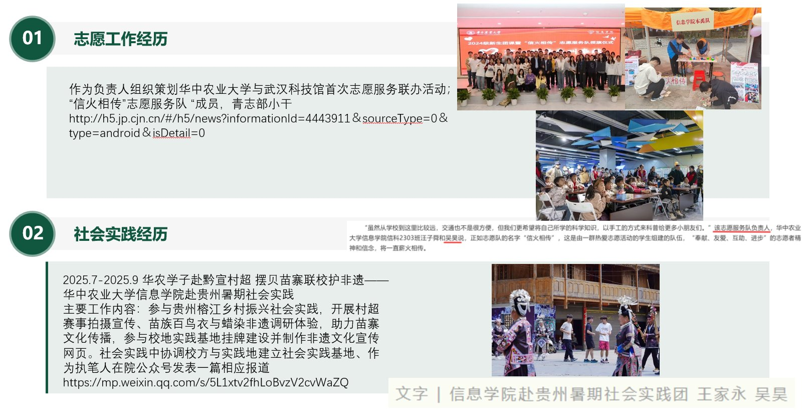
作为本禹志愿服务队负责人，组织策划华中农业大学与武汉科技馆首次校馆联动科教志愿服务项目，负责活动方案策划、志愿者招募培训、岗位调配、校地多方对接及现场秩序保障；主动对接校方与实践单位，协调场地、人员与制度资源；参与实践成果梳理与宣传推文撰写，于学院官方公众号刊发。
课堂之外，用志愿服务与社会实践连接校园与真实世界。
王者荣耀最高排位 80 星、巅峰赛 1800 分；球球大作战超神 100+ 星；无畏契约端游钻石、手游超凡；QQ 飞车最强车神；和平精英钻石段位。乐于思考与探究游戏机制，把"求解更优解"的执念也带进实际游戏中。
作为 11 年游戏玩家，深研机制与数值设计——从参数化打磨游戏 Demo，到实际游戏中反复推演"更优解"，游戏早已不只是消遣，而是理解"规则与平衡"的训练场。
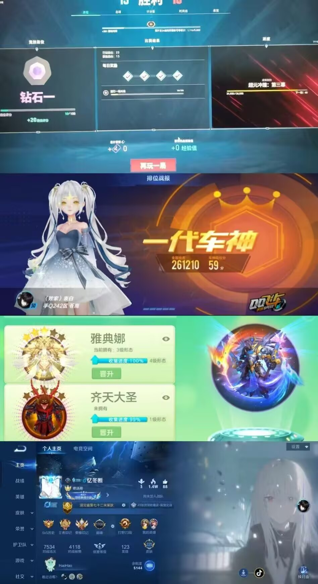
欢迎随时联系我——研究合作、技术交流，或者只是一杯咖啡的时间。
18772900801@163.com
18772900801